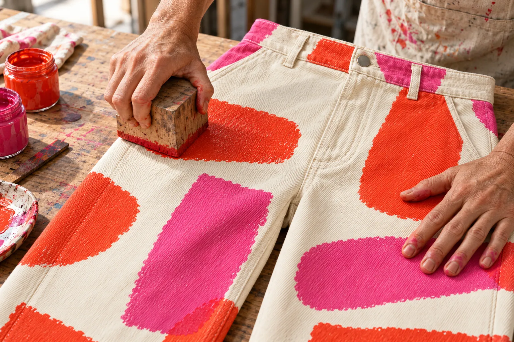
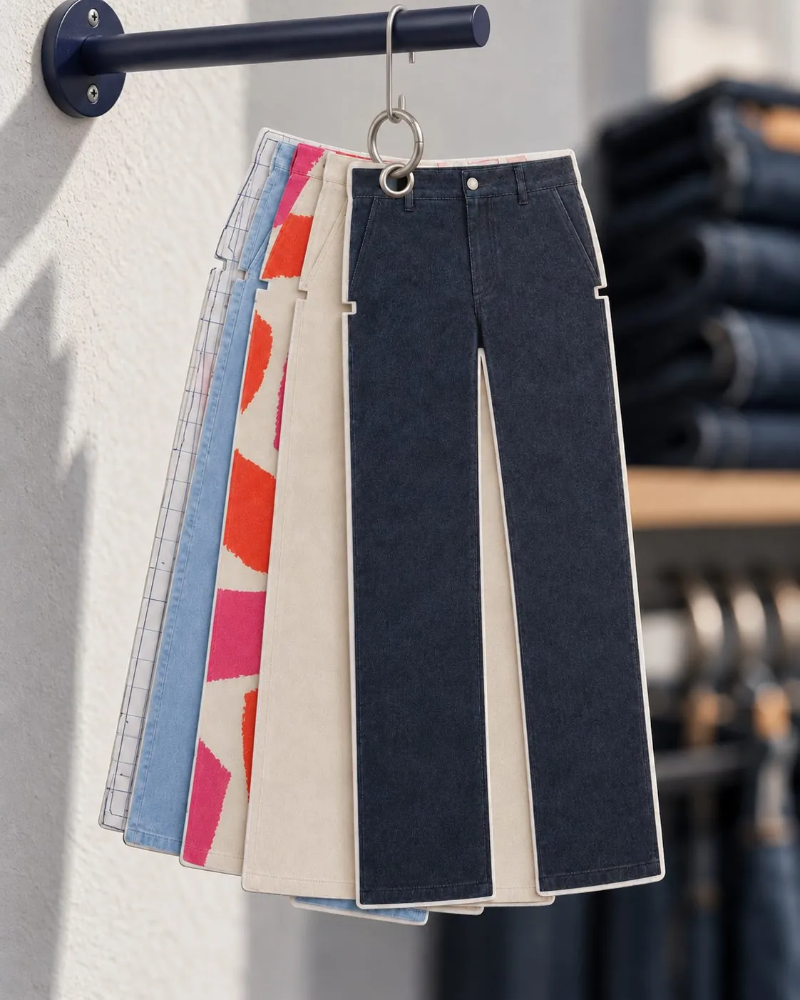

Free size swaps within [30] days · Delivery cost shown before you pay
How we cut
Patternmakers cut small slots into the edges of a pattern so the pieces line up when they're sewn. They're called notches. Our logo is made from them: the gaps in the n, c and h are notches, and the hole in the o is where a pattern hangs on a rail.
One notch
Usually marks the front of a pattern piece. It's the slot in our n, and every paper card has one at the hip.
Two notches
Usually mark the back. On our hangtags the number of slots tells you the length: one for Short, two for Regular, three for Long.
The hanging hole
Patterns hang on a rail from a punched hole. That's the o in our name, and the eyelet on each card.

The Hand
We press every mark by hand, so the ink never lands the same way twice. That's why each Hand pair has its own page, with measurements we took after the ink dried.
See Drop 01
Paper cards
In shops that stock us, every cut hangs on the rail as a card. On the back you'll find the hip, thigh, knee, hem and inseam, drawn where they're measured.
For shops and pressYou can visit the studio and see the patterns.
[Studio address] · by appointment · [email]